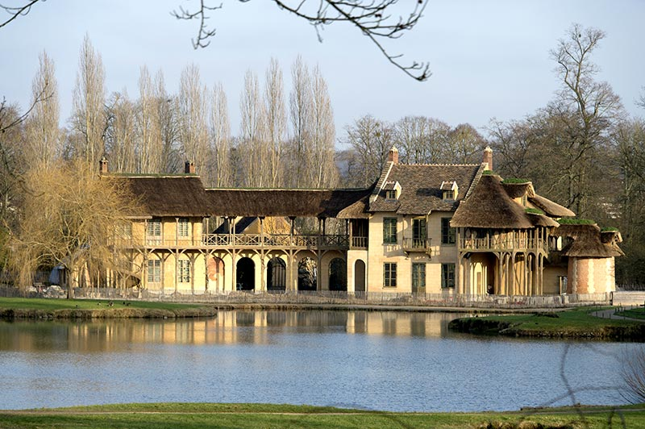

1789. година означена је као година почетка француске револуције. Догађај који је обележио почетак овох периода био је пад затвора Бастиља. Паника је завладала на краљевском двору, а многи дворани су побегли.
Међутим, Луј је одлучио да остане у Версају, а са њим је остала и Марија Антоанета са децом.
5. октобра народ упада у Версај и огорчен уништава све пред собом и захтева да види Марију. Марија излази на терасу и поклања се што изазива неко поштовање народа упркос бесу. Марија је овим доказала да има став и храброст праве краљице.
